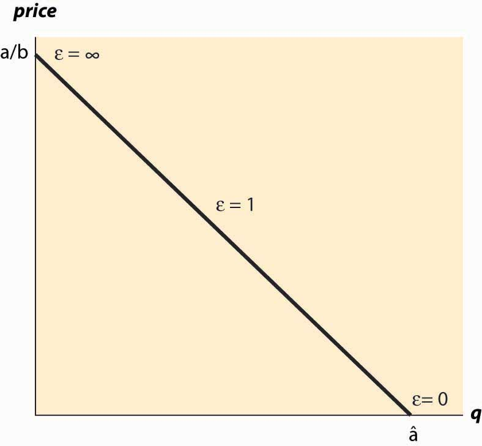

Let x(p) represent the quantity purchased when the price is p, so that the function x represents demand. How responsive is demand to price changes? One might be tempted to use the derivative, , to measure the responsiveness of demand, since it measures how much the quantity demanded changes in response to a small change in price. However, this measure has two problems. First, it is sensitive to a change in units. If I measure the quantity of candy in kilograms rather than in pounds, the derivative of demand for candy with respect to price changes even if the demand itself is unchanged. Second, if I change price units, converting from one currency to another, again the derivative of demand will change. So the derivative is unsatisfactory as a measure of responsiveness because it depends on units of measure. A common way of establishing a unit-free measure is to use percentages, and that suggests considering the responsiveness of demand to a small percentage change in price in percentage terms. This is the notion of elasticity of demandThe percentage change in one variable for a small percentage change in another..The concept of elasticity was invented by Alfred Marshall (1842–1924) in 1881 while sitting on his roof. The elasticity of demand is the percentage decrease in quantity that results from a small percentage increase in price. Formally, the elasticity of demand, which is generally denoted with the Greek letter epsilon, ε, (chosen mnemonically to indicate elasticity) is
The minus sign is included in the expression to make the elasticity a positive number, since demand is decreasing. First, let’s verify that the elasticity is, in fact, unit free. A change in the measurement of x doesn’t affect elasticity because the proportionality factor appears in both the numerator and denominator. Similarly, a change in the measure of price so that p is replaced by r = ap, does not change the elasticity, since as demonstrated below,
the measure of elasticity is independent of a, and therefore not affected by the change in units.
How does a consumer’s expenditure, also known as (individual) total revenue, react to a change in price? The consumer buys x(p) at a price of p, and thus total expenditurePrice times the quantity purchased., or total revenue, is TR = px(p). Thus,
Therefore,
In other words, the percentage change of total revenue resulting from a 1% change in price is one minus the elasticity of demand. Thus, a 1% increase in price will increase total revenue when the elasticity of demand is less than one, which is defined as an inelastic demandWhen the elasticity of demand is less than one.. A price increase will decrease total revenue when the elasticity of demand is greater than one, which is defined as an elastic demandWhen the elasticity of demand is less than one.. The case of elasticity equal to one is called unitary elasticityWhen elasticity is equal to one., and total revenue is unchanged by a small price change. Moreover, that percentage increase in price will increase revenue by approximately 1 – ε percent. Because it is often possible to estimate the elasticity of demand, the formulae can be readily used in practice.
Table 3.1 "Various Demand Elasticities" provides estimates on demand elasticities for a variety of products.
Table 3.1 Various Demand Elasticities
| Product | ε | Product | ε |
|---|---|---|---|
| Salt | 0.1 | Movies | 0.9 |
| Matches | 0.1 | Shellfish, consumed at home | 0.9 |
| Toothpicks | 0.1 | Tires, short-run | 0.9 |
| Airline travel, short-run | 0.1 | Oysters, consumed at home | 1.1 |
| Residential natural gas, short-run | 0.1 | Private education | 1.1 |
| Gasoline, short-run | 0.2 | Housing, owner occupied, long-run | 1.2 |
| Automobiles, long-run | 0.2 | Tires, long-run | 1.2 |
| Coffee | 0.25 | Radio and television receivers | 1.2 |
| Legal services, short-run | 0.4 | Automobiles, short-run | 1.2-1.5 |
| Tobacco products, short-run | 0.45 | Restaurant meals | 2.3 |
| Residential natural gas, long-run | 0.5 | Airline travel, long-run | 2.4 |
| Fish (cod) consumed at home | 0.5 | Fresh green peas | 2.8 |
| Physician services | 0.6 | Foreign travel, long-run | 4.0 |
| Taxi, short-run | 0.6 | Chevrolet automobiles | 4.0 |
| Gasoline, long-run | 0.7 | Fresh tomatoes | 4.6 |
From http://www.mackinac.org/archives/1997/s1997-04.pdf; cited sources: James D. Gwartney and Richard L. Stroup,, Economics: Private and Public Choice, 7th ed., 1995; 8th ed., 1997; Hendrick S. Houthakker and Lester D. Taylor, Consumer Demand in the United States, 1929–1970 (1966; Cambridge: Harvard University Press, 1970); Douglas R. Bohi, Analyzing Demand Behavior (Baltimore: Johns Hopkins University Press, 1981); Hsaing-tai Cheng and Oral Capps, Jr., "Demand for Fish," American Journal of Agricultural Economics, August 1988; and U.S. Department of Agriculture.
When demand is linear, x(p) = a – bp, the elasticity of demand has the form
This case is illustrated in Figure 3.1 "Elasticities for linear demand".
Figure 3.1 Elasticities for linear demand
If demand takes the form x(p) = a * p−ε, then demand has constant elasticityCondition in which the elasticity remains at the same level while the underlying variables change., and the elasticity is equal to ε. In other words, the elasticity remains at the same level while the underlying variables (such as price and quantity) change.
The elasticity of supplyThe percentage increase in quantity supplied resulting from a small percentage increase in price. is analogous to the elasticity of demand in that it is a unit-free measure of the responsiveness of supply to a price change, and is defined as the percentage increase in quantity supplied resulting from a small percentage increase in price. Formally, if s(p) gives the quantity supplied for each price p, the elasticity of supply, denoted by η (the Greek letter “eta,” chosen because epsilon was already taken) is
Again, similar to demand, if supply takes the form s(p) = a * pη, then supply has constant elasticity, and the elasticity is equal to η. A special case of this form is linear supply, which occurs when the elasticity equals one.